Code
library(tidyverse)
library(DT)
library(caret)This project focuses on applying Statistical Learning techniques for the multiclass classification of different cancer types using gene expression data (RNA-Seq). The ability to distinguish between tumor subtypes at the molecular level is fundamental for precision medicine, enabling more accurate diagnoses and personalized treatments.
We utilize an extraction of the TCGA Pan-Cancer (PANCAN) dataset, available at the UCI Machine Learning Repository. This dataset consists of gene expression levels measured using the Illumina HiSeq platform.
The primary goal is not to identify the genetic causes of cancer (comparing healthy vs. sick individuals), but rather to develop a model capable of correctly classifying the origin of tumor tissue based solely on its gene expression profile.
To achieve a robust classification, we will adhere to the Probabilistic Learning framework covered in the course curriculum. Specifically, we will implement and compare the following models suitable for multiclass classification:
Our dataset contains 20,531 genes (\(p\)) and 801 samples (\(n\)). With \(p > n\), the unregularized covariance estimates used by classical LDA and QDA are singular. Reducing dimension or regularizing these estimates is necessary; this does not make all high-dimensional classifiers impossible.
This analysis uses PCA to reduce dimension. Genes that are constant in the relevant training partition are removed before scaling. Nonzero-variance genes are centered and standardized; the test partition and each validation fold use transformations fitted on their corresponding training observations.
Following the best practices for Model Evaluation, we will rigorously validate our results using:
library(tidyverse)
library(DT)
library(caret)# Load the local CSV files
# Use read_csv for faster loading of large datasets
data_dir <- Sys.getenv("RNA_SEQ_DATA_DIR", unset = ".")
data_raw <- read_csv(file.path(data_dir, "data.csv"), show_col_types = FALSE)New names:
• `` -> `...1`labels_raw <- read_csv(file.path(data_dir, "labels.csv"), show_col_types = FALSE)New names:
• `` -> `...1`stopifnot(!anyDuplicated(data_raw[[1]]), !anyDuplicated(labels_raw[[1]]),
!anyNA(data_raw[[1]]), !anyNA(labels_raw[[1]]),
setequal(data_raw[[1]], labels_raw[[1]]))
# Display dimensions as a proper table
tibble(
Dataset = c("Gene Expression (data)", "Labels"),
Rows = c(nrow(data_raw), nrow(labels_raw)),
Columns = c(ncol(data_raw), ncol(labels_raw))
) |>
datatable(
options = list(dom = "t", ordering = FALSE),
rownames = FALSE,
caption = "Dimensions of loaded datasets"
)The expression matrix contains 801 samples and 20532 columns, including the sample identifier. The loader checks unique, nonmissing IDs and equality of the two ID sets before a one-to-one join; matching row counts alone would not establish correspondence.
# Merge the labels (Class) with the gene expression data
# Both files likely have the sample ID as the first column, often named '...1' by default
full_data <- inner_join(labels_raw, data_raw, by = c("...1" = "...1"), relationship = "one-to-one") %>%
rename(sample_id = ...1) %>%
mutate(Class = as.factor(Class))
stopifnot(!anyNA(full_data$Class), all(is.finite(as.matrix(select(full_data, starts_with("gene_"))))))
# Fix the split before looking at expression distributions or class associations.
set.seed(42)
train_idx <- createDataPartition(full_data$Class, p = 0.8, list = FALSE)
train_data <- full_data[train_idx, ]
test_data <- full_data[-train_idx, ]
# Quick check of the resulting dataset structure
# Display the first 10 columns of the first 20 rows using an interactive table
datatable(
full_data %>% select(1:10) %>% head(20),
options = list(scrollX = TRUE, pageLength = 5),
caption = "Preview of the first 10 columns (Sample ID, Class + 8 Genes)"
)We join expression profiles and labels by sample ID and fix the stratified split immediately. The preview and class counts describe the cohort; all subsequent feature distributions, correlations and ANOVA summaries use training rows only.
# Visualization of class distribution
full_data |>
count(Class) |>
mutate(pct = round(n / sum(n) * 100, 1),
label = paste0(n, " (", pct, "%)")) |>
ggplot(aes(x = reorder(Class, n), y = n, fill = Class)) +
geom_col() +
geom_text(aes(label = label), hjust = 1.1, color = "white", fontface = "bold", size = 4) +
coord_flip() +
labs(
title = "Cancer Class Distribution",
x = "Cancer Type", y = "Number of samples",
subtitle = "PANCAN Dataset (UCI)"
) +
theme_minimal() +
theme(legend.position = "none")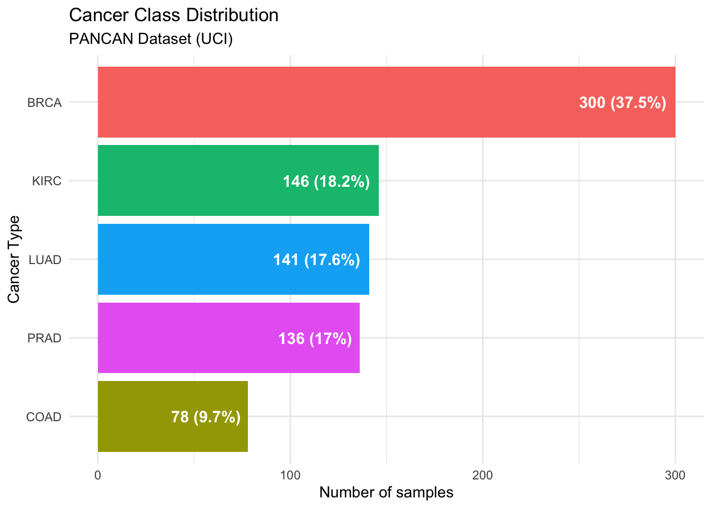
The dataset exhibits a moderate class imbalance. BRCA (Breast Invasive Carcinoma) is the most represented class with roughly 300 samples, while COAD (Colon Adenocarcinoma) is the least represented with approximately 78 samples, nearly a 4:1 ratio. The remaining three classes (KIRC, LUAD, PRAD) sit in a similar mid-range around 130-140 samples each.
This imbalance is worth noting because:
gene_cols <- train_data |> select(starts_with("gene_"))
tibble(
`Total Cells` = scales::comma(prod(dim(gene_cols))),
`Missing Values` = sum(is.na(gene_cols)),
`% Missing` = round(sum(is.na(gene_cols)) / prod(dim(gene_cols)) * 100, 4)
) |>
datatable(
options = list(dom = "t", ordering = FALSE),
rownames = FALSE,
caption = "Missing values in training gene expression columns"
)The table reports missing values in the training expression matrix. The loader also rejects nonfinite gene values in the full input; missing-value checks alone do not establish broader data quality or biological validity.
set.seed(42)
sample_genes <- sample(names(gene_cols), 500)
train_data |>
select(Class, all_of(sample_genes)) |>
pivot_longer(-Class, names_to = "gene", values_to = "expression") |>
ggplot(aes(x = expression)) +
geom_histogram(bins = 80, fill = "steelblue", alpha = 0.7) +
labs(
title = "Global Gene Expression Distribution (500 random genes)",
x = "Expression Level", y = "Count"
) +
theme_minimal()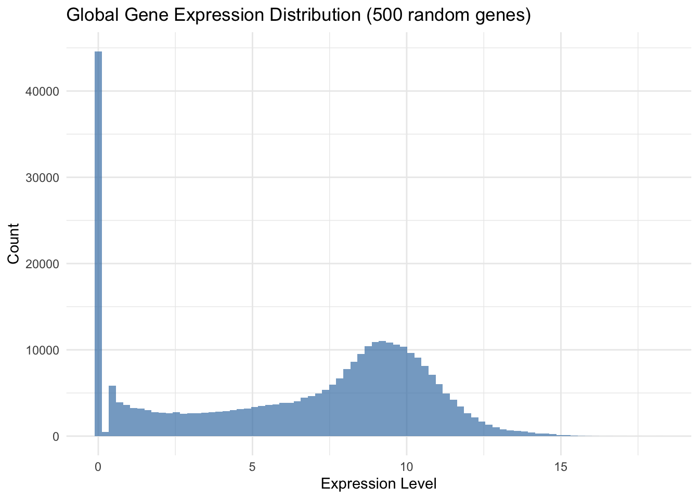
The distribution reveals a clear bimodal pattern:
A low expression value does not imply that a gene is uninformative. The analysis removes only genes with zero training variance; it does not select features from these exploratory plots.
train_data |>
mutate(mean_expr = rowMeans(pick(starts_with("gene_")), na.rm = TRUE)) |>
ggplot(aes(x = Class, y = mean_expr, fill = Class)) +
geom_boxplot(alpha = 0.7) +
labs(
title = "Mean Gene Expression per Sample by Cancer Type",
x = "Cancer Type", y = "Mean Expression"
) +
theme_minimal() +
theme(legend.position = "none")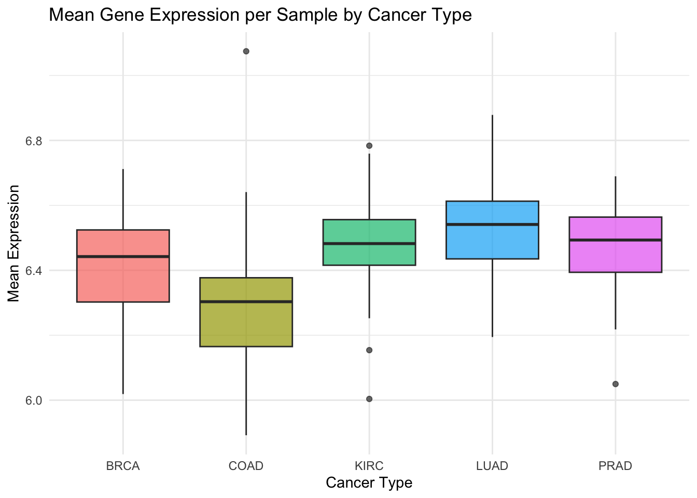
The boxplots compare average expression per training sample. Overlap of these summaries does not rule out discrimination by individual genes, and the figure does not establish a biological mechanism.
gene_variances <- gene_cols |>
summarise(across(everything(), \(x) var(x, na.rm = TRUE))) |>
pivot_longer(everything(), names_to = "gene", values_to = "variance") |>
arrange(desc(variance))
ggplot(gene_variances, aes(x = variance + 1e-6)) +
geom_histogram(bins = 100, fill = "darkorange", alpha = 0.7) +
scale_x_log10() +
labs(
title = "Distribution of Gene Variances (log scale)",
x = "Variance (log10)", y = "Count",
subtitle = "Raw variance alone does not measure predictive value"
) +
theme_minimal()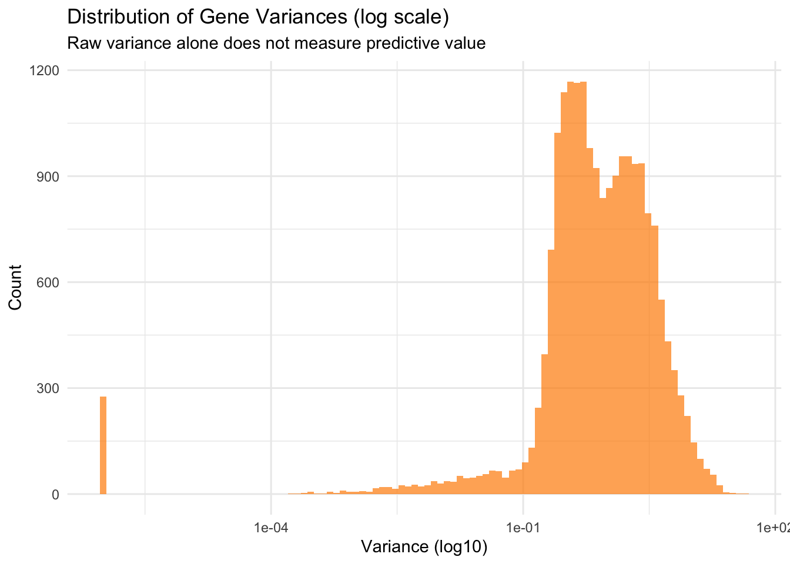
There are 276 genes with zero training variance and 11329 below 1. Raw variance does not measure predictive value: every retained gene is standardized to unit training variance before PCA, so low raw variance does not imply a negligible loading.
library(pheatmap)
top_genes <- gene_variances |> slice_head(n = 30) |> pull(gene)
cor_matrix <- train_data |>
select(all_of(top_genes)) |>
cor(use = "pairwise.complete.obs")
pheatmap(
cor_matrix,
main = "Correlation Among Top 30 Most Variable Genes",
fontsize = 7,
color = colorRampPalette(c("blue", "white", "red"))(100)
)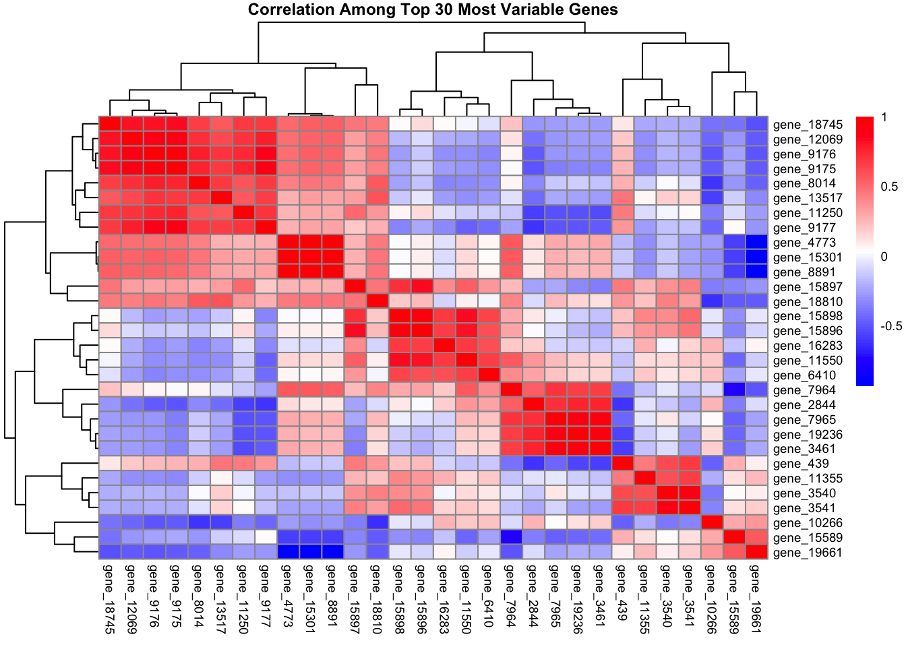
The heatmap summarizes pairwise correlations among the 30 genes with largest training variance. Correlation alone does not identify shared pathways or biological causes. PCA gives uncorrelated coordinates on the fitted training sample, not necessarily within each cancer class.
# One-way ANOVA F-statistic per gene to identify class-discriminative genes
f_stats <- map_dbl(names(gene_cols), \(g) {
tryCatch({
summary(aov(gene_cols[[g]] ~ train_data$Class))[[1]][1, "F value"]
}, error = \(e) NA_real_)
})
top_diff_genes <- tibble(gene = names(gene_cols), F_stat = f_stats) |>
arrange(desc(F_stat)) |>
slice_head(n = 12)
train_data |>
select(Class, all_of(top_diff_genes$gene)) |>
pivot_longer(-Class, names_to = "gene", values_to = "expression") |>
ggplot(aes(x = Class, y = expression, fill = Class)) +
geom_boxplot(alpha = 0.7, outlier.size = 0.5) +
facet_wrap(~gene, scales = "free_y", ncol = 4) +
labs(title = "Top 12 Differentially Expressed Genes (by ANOVA F-stat)") +
theme_minimal() +
theme(legend.position = "none", axis.text.x = element_text(angle = 45, hjust = 1))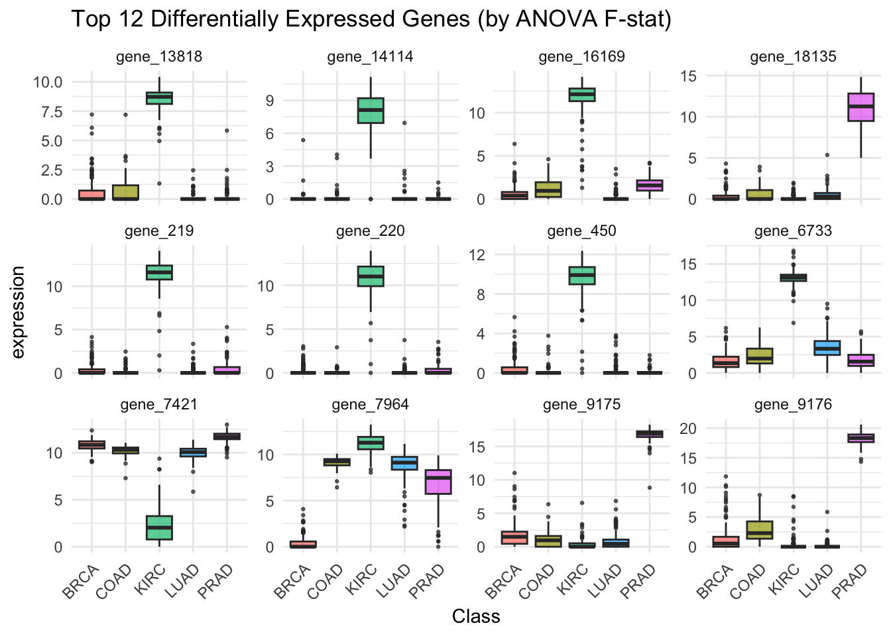
The plot ranks training genes by their one-way ANOVA F-statistic. This is an exploratory comparison, without multiplicity-adjusted inference or gene annotation. A large F-statistic does not guarantee a large PCA loading, because PCA does not use the labels. These rankings are not used to select classifier inputs.
The stratified 80/20 split was fixed before feature EDA. Its counts are shown below; preprocessing for cross-validation is fitted separately within each analysis fold.
library(caret)
# The fixed split was created before feature EDA; display its counts here.
tibble(
Set = c("Training", "Test"),
Samples = c(nrow(train_data), nrow(test_data))
) |>
bind_cols(
bind_rows(
train_data |> count(Class) |> pivot_wider(names_from = Class, values_from = n),
test_data |> count(Class) |> pivot_wider(names_from = Class, values_from = n)
)
) |>
datatable(
options = list(dom = "t", ordering = FALSE, scrollX = TRUE),
rownames = FALSE,
caption = "Train/Test split with class distribution"
)The stratified split preserves the relative proportions of each cancer type in both sets. The training set will be used for PCA fitting, model training, and 10-fold cross-validation. The test set is held out entirely until the final evaluation step.
The raw gene space has more dimensions than observations. PCA provides the dimension reduction used here for the classical discriminant models; regularized high-dimensional alternatives, including logistic regression, remain possible.
Crucially, PCA is fitted only on the training set to avoid data leakage. The test set is then projected onto the same principal components.
library(factoextra)
# Remove zero-variance genes (computed on training set)
train_gene_cols <- train_data |> dplyr::select(starts_with("gene_"))
train_var <- apply(train_gene_cols, 2, var)
nonzero_var_genes <- names(train_var[train_var > 0])
# Fit PCA on training data only
pca_train <- train_data |> dplyr::select(all_of(nonzero_var_genes))
pca_result <- prcomp(pca_train, center = TRUE, scale. = TRUE)
# Project test data using the training PCA
pca_test_scores <- predict(pca_result, newdata = test_data |> dplyr::select(all_of(nonzero_var_genes)))pct_var <- (pca_result$sdev^2 / sum(pca_result$sdev^2) * 100)[1:30]
tibble(PC = factor(1:30, levels = 1:30), pct = pct_var) |>
ggplot(aes(x = PC, y = pct)) +
geom_col(fill = "steelblue", alpha = 0.7) +
geom_line(aes(x = as.numeric(PC), y = pct), linewidth = 0.5) +
geom_point(aes(x = as.numeric(PC), y = pct), size = 1.5) +
geom_text(
data = tibble(PC = factor(1:10, levels = 1:30),
pct = pct_var[1:10]),
aes(label = paste0(round(pct, 1), "%")),
vjust = -0.8, hjust = -0.1, size = 3
) +
labs(
title = "Scree Plot: Variance Explained by Principal Components",
x = "Principal Component", y = "Percentage of Explained Variance"
) +
theme_minimal()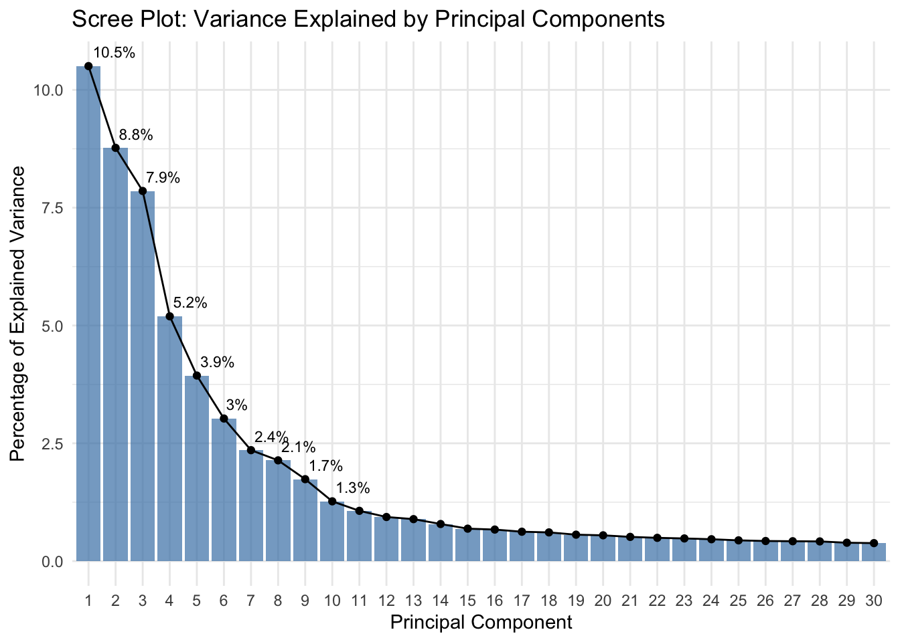
The first three training components explain 10.5%, 8.8% and 7.9% of standardized training variance. Explained variance measures reconstruction, not classification accuracy.
cumvar <- cumsum(pca_result$sdev^2 / sum(pca_result$sdev^2))
pc_cutoffs <- vapply(c(0.80, 0.90, 0.95), function(target) which(cumvar >= target)[1], integer(1))
tibble(PC = seq_along(cumvar), cumulative_variance = cumvar) |>
filter(PC <= 500) |>
ggplot(aes(x = PC, y = cumulative_variance)) +
geom_line(color = "steelblue", linewidth = 0.8) +
geom_hline(yintercept = c(0.80, 0.90, 0.95), linetype = "dashed", color = "grey50") +
annotate("text", x = 490, y = c(0.81, 0.91, 0.96),
label = c("80%", "90%", "95%"), size = 3.5, hjust = 1) +
geom_vline(xintercept = pc_cutoffs, linetype = "dotted", color = "red", alpha = 0.5) +
labs(
title = "Cumulative Variance Explained by Principal Components",
x = "Number of Components", y = "Cumulative Proportion"
) +
theme_minimal()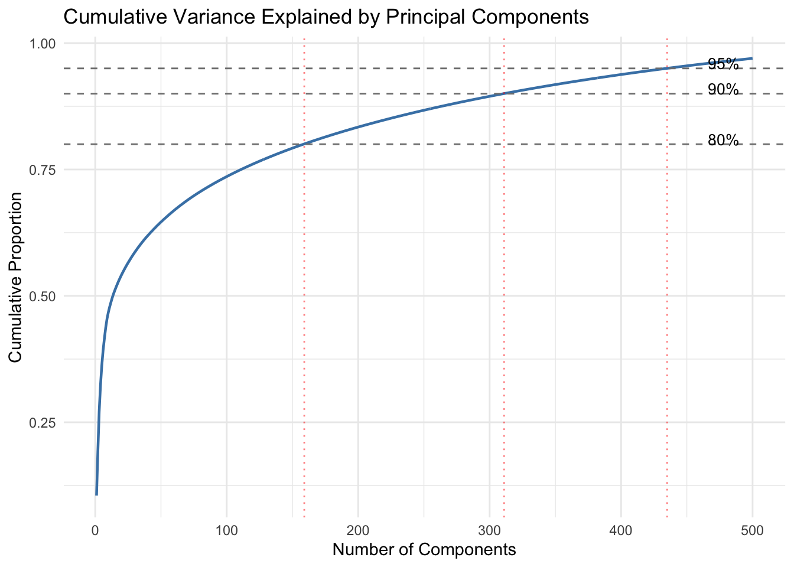
The training PCA needs 159, 311 and 435 components to reach 80%, 90% and 95% of variance, respectively. The classification grid below is fixed explicitly and selected using training cross-validation.
pca_scores <- as_tibble(pca_result$x[, 1:5]) |>
bind_cols(Class = train_data$Class)
ggplot(pca_scores, aes(x = PC1, y = PC2, color = Class)) +
geom_point(alpha = 0.7, size = 2) +
labs(
title = "PCA: PC1 vs PC2 by Cancer Type (Training Set)",
subtitle = "Axes maximize training variance without using class labels"
) +
theme_minimal()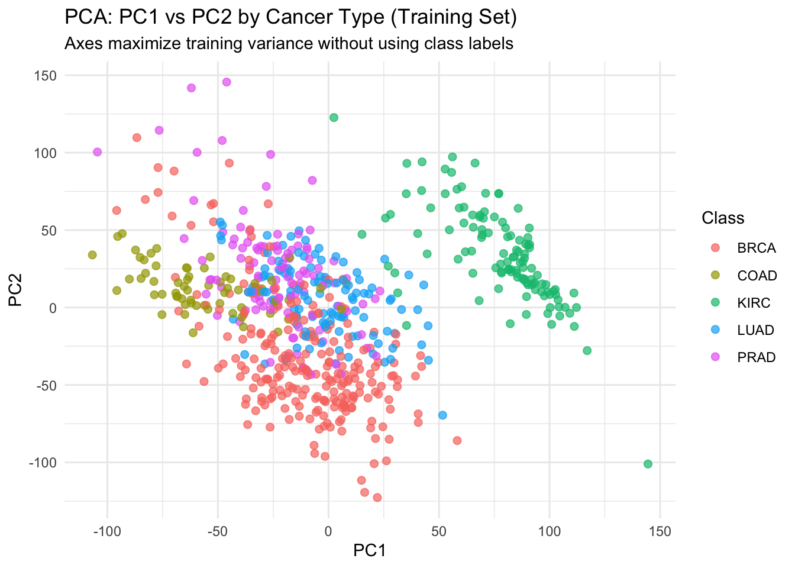
This projection displays the first two training PCs, with class labels added only for interpretation. The plot is descriptive; the cross-validation and held-out metrics quantify classification performance.
ggplot(pca_scores, aes(x = PC3, y = PC4, color = Class)) +
geom_point(alpha = 0.7, size = 2) +
labs(
title = "PCA: PC3 vs PC4 by Cancer Type (Training Set)",
subtitle = "Additional orthogonal directions of training variance"
) +
theme_minimal()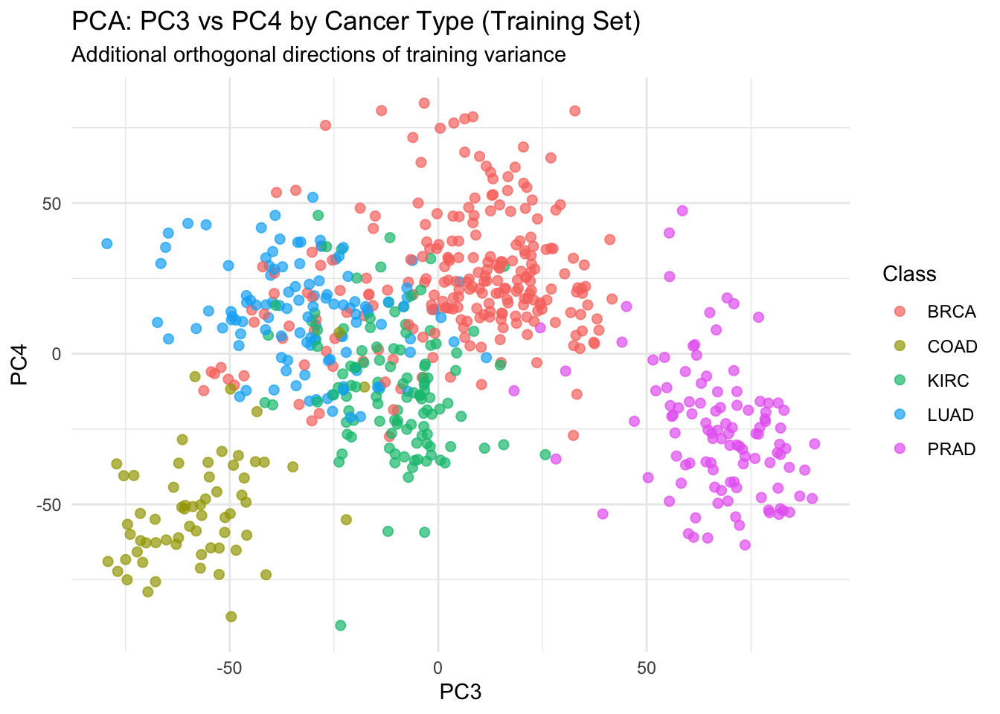
The next two PCs display additional variation. Class overlap or separation in this plane does not determine which dimension is best for classification.
We now train the four probabilistic classifiers outlined in the introduction: LDA, QDA, Naive Bayes, and Multinomial Logistic Regression. PCA, centring and scaling are fitted independently inside every resampling fold; otherwise validation folds would influence their own feature representation.
We evaluate the fixed PC grid 5, 10, 20, 50, 100 and 159. The largest value is a candidate dimension, rather than a guaranteed variance threshold in every fold.
Note that QDA requires each class-specific covariance matrix to be invertible, so the number of PCs must be smaller than the size of the smallest class in the training set. We therefore limit QDA to a maximum of 50 PCs.
library(MASS)
library(nnet)
library(e1071)
library(naivebayes)
pc_counts <- c(5, 10, 20, 50, 100, 159)
x_train <- train_data |>
dplyr::select(all_of(nonzero_var_genes))
y_train <- train_data$Class
# The x/y interface avoids expanding a 20k-gene formula. To avoid fitting the
# same PCA 22 times per fold, each fold fits the full 159-PC transformation once
# on its analysis subset, then every classifier consumes the required prefix.
# This preserves fold isolation: validation samples never affect centring,
# scaling, zero-variance filtering, or PCA.
set.seed(42)
fold_indices <- createFolds(y_train, k = 10, returnTrain = FALSE)
max_pcs <- max(pc_counts)
fold_scores <- lapply(fold_indices, function(validation_idx) {
analysis_idx <- setdiff(seq_len(nrow(x_train)), validation_idx)
transformation <- preProcess(
x_train[analysis_idx, ],
method = c("zv", "center", "scale", "pca"),
pcaComp = max_pcs
)
list(
train_x = predict(transformation, x_train[analysis_idx, ])[, seq_len(max_pcs), drop = FALSE],
valid_x = predict(transformation, x_train[validation_idx, ])[, seq_len(max_pcs), drop = FALSE],
train_y = y_train[analysis_idx],
valid_y = y_train[validation_idx]
)
})
predict_fold <- function(model_name, fold, k) {
train_x <- fold$train_x[, seq_len(k), drop = FALSE]
valid_x <- fold$valid_x[, seq_len(k), drop = FALSE]
if (model_name == "LDA") {
predict(lda(x = train_x, grouping = fold$train_y), valid_x)$class
} else if (model_name == "QDA") {
predict(qda(x = train_x, grouping = fold$train_y), valid_x)$class
} else if (model_name == "Naive Bayes") {
fit <- naive_bayes(x = train_x, y = fold$train_y)
predict(fit, newdata = valid_x)
} else if (model_name == "Multinomial LogReg") {
set.seed(42)
train_md <- as.data.frame(train_x)
train_md$Class <- fold$train_y
fit <- multinom(Class ~ ., data = train_md, trace = FALSE, MaxNWts = 5000, maxit = 1000)
stopifnot(fit$convergence == 0)
predict(fit, newdata = as.data.frame(valid_x))
} else {
stop("Unsupported model: ", model_name)
}
}
evaluate_configuration <- function(model_name, k) {
predictions <- unlist(lapply(fold_scores, predict_fold, model_name = model_name, k = k))
reference <- unlist(lapply(fold_scores, `[[`, "valid_y"))
comparison <- confusionMatrix(
factor(predictions, levels = levels(y_train)),
factor(reference, levels = levels(y_train))
)
tibble(
PCs = k,
Model = model_name,
Accuracy = unname(comparison$overall["Accuracy"]),
Kappa = unname(comparison$overall["Kappa"])
)
}
models_to_evaluate <- c("LDA", "Naive Bayes", "Multinomial LogReg")
results_list <- list()
for (k in pc_counts) {
for (model_name in models_to_evaluate) {
results_list[[paste(model_name, k, sep = "_")]] <- evaluate_configuration(model_name, k)
}
# QDA needs more samples per class than retained components.
if (k <= 50) {
results_list[[paste("QDA", k, sep = "_")]] <- evaluate_configuration("QDA", k)
}
}
results_all <- bind_rows(results_list)The training loop compares 22 configurations with ten fits each (4 classifiers x 6 PC counts, minus QDA for 100 and 159 PCs). Each model is evaluated via 10-fold cross-validation within the training set, producing both Accuracy and Kappa as performance metrics. Kappa is particularly useful here because it adjusts for the class imbalance we observed earlier, providing an additional summary of agreement beyond the class-marginal expectation.
results_all |>
ggplot(aes(x = PCs, y = Accuracy, color = Model, shape = Model)) +
geom_line(linewidth = 0.8) +
geom_point(size = 3) +
scale_x_continuous(breaks = pc_counts) +
scale_y_continuous(labels = scales::percent_format(), limits = c(0, 1.0)) +
labs(
title = "Classification Accuracy vs Number of Principal Components",
x = "Number of PCs", y = "Accuracy (10-fold CV, Training Set)"
) +
theme_minimal()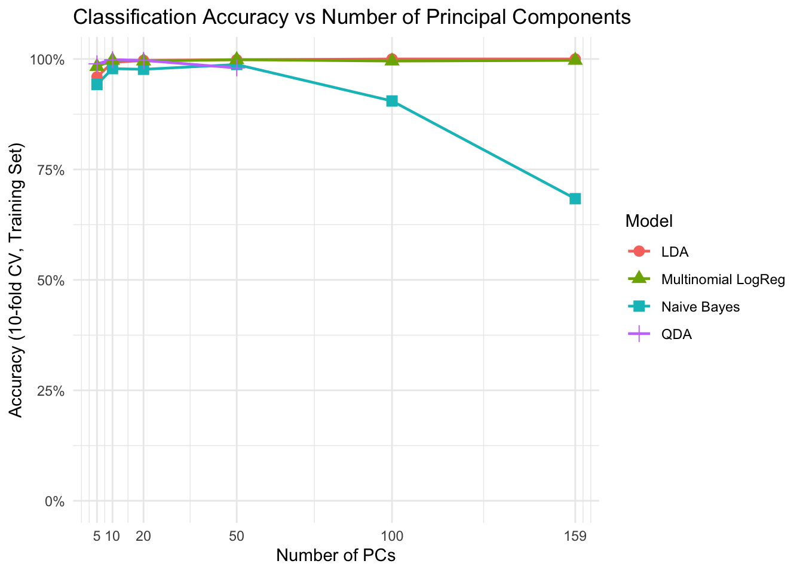
results_all |>
mutate(
Accuracy = scales::percent(Accuracy, accuracy = 0.1),
Kappa = round(Kappa, 3)
) |>
pivot_wider(names_from = Model, values_from = c(Accuracy, Kappa)) |>
datatable(
options = list(dom = "t", pageLength = 10, scrollX = TRUE),
rownames = FALSE,
caption = "10-fold CV results across models and PC counts"
)The table and curve above are the authoritative record for this execution. They compare model/PC configurations using only the training partition; the hold-out test set remains untouched until the next section. QDA is deliberately limited to 50 PCs because each class covariance estimate requires more observations than retained components. PCA produces orthogonal coordinates, which can improve numerical conditioning, but it does not itself prove that any model assumption is true.
To get an honest estimate of generalization performance, we now evaluate each model on the held-out test set. For each classifier, we select the best PC count from cross-validation, retrain on the full training set, and predict on the test set.
# Find best PC count per model (from CV results)
best_per_model <- results_all |>
group_by(Model) |>
arrange(desc(Accuracy), desc(Kappa)) |>
slice_head(n = 1) |>
ungroup()
# Map model names to caret method names (used in CV loop above)
method_map <- c(
"LDA" = "lda",
"QDA" = "qda",
"Naive Bayes" = "naive_bayes",
"Multinomial LogReg" = "multinom"
)
# Retrain each best model on full training set, predict on test set
per_model_cms <- list()
for (i in seq_len(nrow(best_per_model))) {
row <- best_per_model[i, ]
k <- row$PCs
model_name <- row$Model
# Training data in PC space
train_md <- as_tibble(pca_result$x[, 1:k]) |>
mutate(Class = train_data$Class)
# Test data in PC space (projected using training PCA)
test_md <- as_tibble(pca_test_scores[, 1:k])
set.seed(42)
# Fit directly to avoid caret tuneGrid issues with method = "none"
if (model_name == "LDA") {
fit <- lda(Class ~ ., data = train_md)
test_preds <- predict(fit, newdata = test_md)$class
} else if (model_name == "QDA") {
fit <- qda(Class ~ ., data = train_md)
test_preds <- predict(fit, newdata = test_md)$class
} else if (model_name == "Naive Bayes") {
fit <- naive_bayes(Class ~ ., data = train_md)
test_preds <- predict(fit, newdata = test_md)
} else if (model_name == "Multinomial LogReg") {
fit <- multinom(Class ~ ., data = train_md, trace = FALSE, MaxNWts = 5000, maxit = 1000)
stopifnot(fit$convergence == 0)
test_preds <- predict(fit, newdata = test_md)
}
per_model_cms[[model_name]] <- list(
cm = confusionMatrix(test_preds, test_data$Class),
k = k,
name = model_name
)
}info <- per_model_cms[["LDA"]]
info$cm$table |>
as.data.frame() |>
ggplot(aes(x = Reference, y = Prediction, fill = Freq)) +
geom_tile(color = "white") +
geom_text(aes(label = Freq), size = 5, fontface = "bold") +
scale_fill_gradient(low = "white", high = "steelblue") +
labs(
title = paste0("LDA Confusion Matrix (Test Set, ", info$k, " PCs)"),
subtitle = paste0("Test Accuracy: ", scales::percent(info$cm$overall["Accuracy"], accuracy = 0.1)),
x = "True Class", y = "Predicted Class"
) +
theme_minimal() +
theme(legend.position = "none")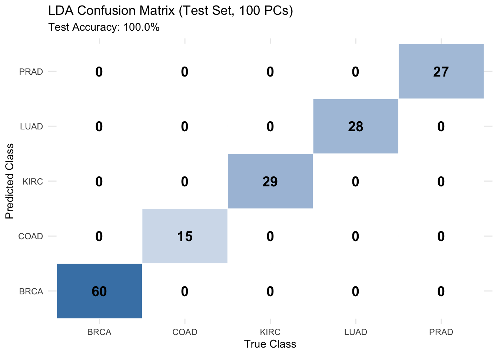
The matrix and subtitle above report LDA’s held-out result for the PC count selected by training-only cross-validation. Orthogonal PCA scores can improve numerical conditioning, but they do not by themselves establish LDA’s equal-covariance assumption.
info <- per_model_cms[["QDA"]]
info$cm$table |>
as.data.frame() |>
ggplot(aes(x = Reference, y = Prediction, fill = Freq)) +
geom_tile(color = "white") +
geom_text(aes(label = Freq), size = 5, fontface = "bold") +
scale_fill_gradient(low = "white", high = "steelblue") +
labs(
title = paste0("QDA Confusion Matrix (Test Set, ", info$k, " PCs)"),
subtitle = paste0("Test Accuracy: ", scales::percent(info$cm$overall["Accuracy"], accuracy = 0.1)),
x = "True Class", y = "Predicted Class"
) +
theme_minimal() +
theme(legend.position = "none")QDA permits one covariance matrix per class. Its held-out result is shown above for the configuration selected without using the test set; comparison with LDA should be treated as empirical for this split rather than as evidence that either covariance assumption is universally correct.
info <- per_model_cms[["Naive Bayes"]]
info$cm$table |>
as.data.frame() |>
ggplot(aes(x = Reference, y = Prediction, fill = Freq)) +
geom_tile(color = "white") +
geom_text(aes(label = Freq), size = 5, fontface = "bold") +
scale_fill_gradient(low = "white", high = "steelblue") +
labs(
title = paste0("Naive Bayes Confusion Matrix (Test Set, ", info$k, " PCs)"),
subtitle = paste0("Test Accuracy: ", scales::percent(info$cm$overall["Accuracy"], accuracy = 0.1)),
x = "True Class", y = "Predicted Class"
) +
theme_minimal() +
theme(legend.position = "none")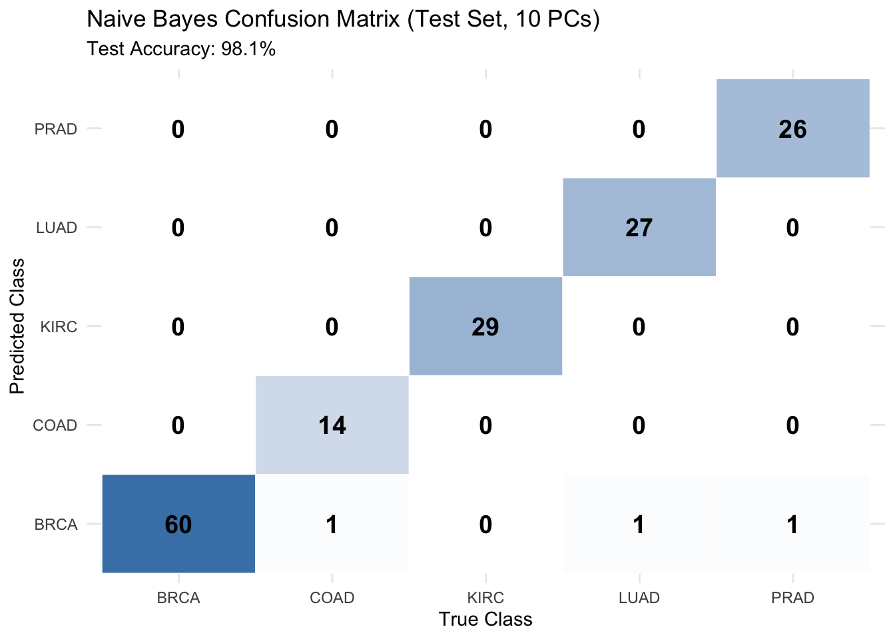
Naive Bayes’ held-out errors and class-specific pattern are shown in the matrix above. Its conditional-independence assumption remains an approximation even when PCA scores are uncorrelated, so this model should be judged from its validation and test metrics rather than from the visualization alone.
info <- per_model_cms[["Multinomial LogReg"]]
info$cm$table |>
as.data.frame() |>
ggplot(aes(x = Reference, y = Prediction, fill = Freq)) +
geom_tile(color = "white") +
geom_text(aes(label = Freq), size = 5, fontface = "bold") +
scale_fill_gradient(low = "white", high = "steelblue") +
labs(
title = paste0("Multinomial LogReg Confusion Matrix (Test Set, ", info$k, " PCs)"),
subtitle = paste0("Test Accuracy: ", scales::percent(info$cm$overall["Accuracy"], accuracy = 0.1)),
x = "True Class", y = "Predicted Class"
) +
theme_minimal() +
theme(legend.position = "none")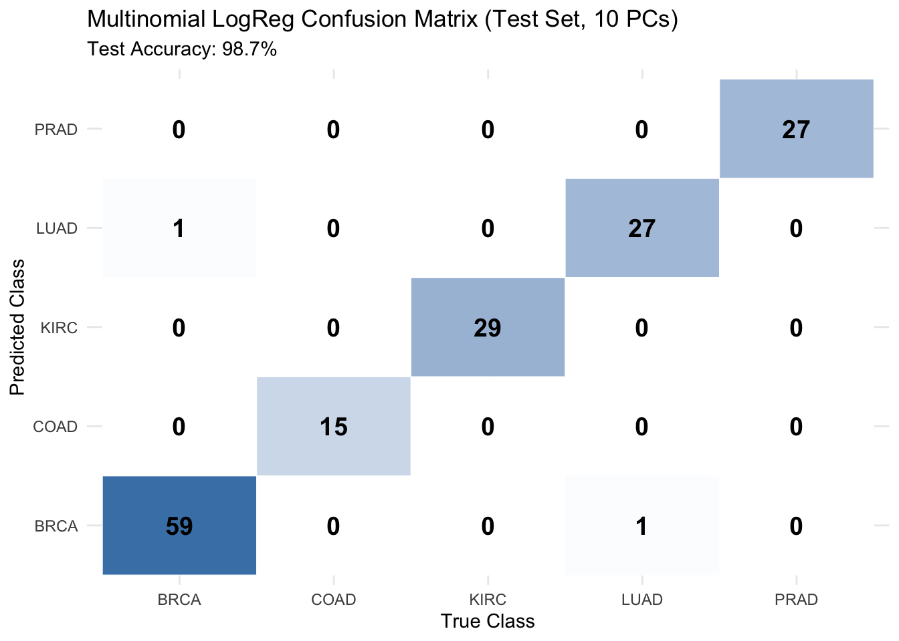
Multinomial logistic regression directly estimates decision boundaries in the selected PCA space. The matrix above gives its current held-out result; it should be compared with the other methods using the same fixed test split, while recognising that a single split does not quantify deployment performance.
# Compare test-set accuracy across all four models
test_summary <- tibble(
Model = names(per_model_cms),
PCs = map_dbl(per_model_cms, \(x) x$k),
`Test Accuracy` = map_dbl(per_model_cms, \(x) x$cm$overall["Accuracy"]),
`Test Kappa` = map_dbl(per_model_cms, \(x) x$cm$overall["Kappa"])
) |>
arrange(desc(`Test Accuracy`), desc(`Test Kappa`))
test_summary |>
mutate(
`Test Accuracy` = scales::percent(`Test Accuracy`, accuracy = 0.1),
`Test Kappa` = round(`Test Kappa`, 4)
) |>
datatable(
options = list(dom = "t", ordering = FALSE),
rownames = FALSE,
caption = "Test set performance comparison across models (best CV configuration each)"
)The table above reports one held-out evaluation for each model after selecting its PC count using training-only cross-validation. PCA for the final fits is trained exclusively on the training partition and then applied to the untouched test partition. These results are useful for this dataset and split, but a single hold-out does not by itself establish deployment performance; repeated external evaluation would be needed for that claim.
Very high accuracy can be a symptom of data leakage or other methodological errors. The following checks assess selected leakage risks, but they do not replace repeated evaluation on an external cohort.
Shuffling labels removes their original pairing with expression profiles. The diagnostic uses the same 50-PC LDA configuration in both conditions. Uniform prediction has expected accuracy 20%; because the classes are imbalanced, that is not the expected accuracy of every shuffled-label fit. The training-majority baseline is shown too.
set.seed(123)
shuffled_labels <- sample(train_data$Class)
# LDA with 50 PCs on shuffled labels
train_md_shuf <- as_tibble(pca_result$x[, 1:50]) |>
mutate(Class = shuffled_labels)
test_md_shuf <- as_tibble(pca_test_scores[, 1:50])
fit_shuf <- lda(Class ~ ., data = train_md_shuf)
preds_shuf <- predict(fit_shuf, newdata = test_md_shuf)$class
acc_shuf <- mean(preds_shuf == test_data$Class)
train_md_real <- train_md_shuf
train_md_real$Class <- train_data$Class
fit_real_50 <- lda(Class ~ ., data = train_md_real)
acc_real_50 <- mean(predict(fit_real_50, newdata = test_md_shuf)$class == test_data$Class)
majority_class <- names(which.max(table(train_data$Class)))
majority_accuracy <- mean(test_data$Class == majority_class)
tibble(
Condition = c("Real labels (LDA, 50 PCs)", "Shuffled labels (LDA, 50 PCs)", "Uniform random prediction (5 classes)", "Training-majority prediction"),
Accuracy = scales::percent(c(
acc_real_50,
acc_shuf,
1/5,
majority_accuracy
), accuracy = 0.1)
) |>
datatable(
options = list(dom = "t", ordering = FALSE),
rownames = FALSE,
caption = "Single shuffled-label diagnostic with matched LDA dimension"
)The table contrasts the real-label result with a single shuffled-label sanity check. It is diagnostic rather than a formal permutation test: a formal test would repeat many permutations and report an empirical p-value.
The two-PC fit checks sensitivity to representation dimension. Reducing dimension can help or harm accuracy; no particular outcome proves that a model is legitimate.
train_md_2pc <- as_tibble(pca_result$x[, 1:2]) |>
mutate(Class = train_data$Class)
test_md_2pc <- as_tibble(pca_test_scores[, 1:2])
fit_2pc <- lda(Class ~ ., data = train_md_2pc)
preds_2pc <- predict(fit_2pc, newdata = test_md_2pc)$class
cm_2pc <- confusionMatrix(preds_2pc, test_data$Class)
cm_2pc$table |>
as.data.frame() |>
ggplot(aes(x = Reference, y = Prediction, fill = Freq)) +
geom_tile(color = "white") +
geom_text(aes(label = Freq), size = 5, fontface = "bold") +
scale_fill_gradient(low = "white", high = "steelblue") +
labs(
title = "LDA with Only 2 PCs (Test Set)",
subtitle = paste0("Test Accuracy: ", scales::percent(cm_2pc$overall["Accuracy"], accuracy = 0.1)),
x = "True Class", y = "Predicted Class"
) +
theme_minimal() +
theme(legend.position = "none")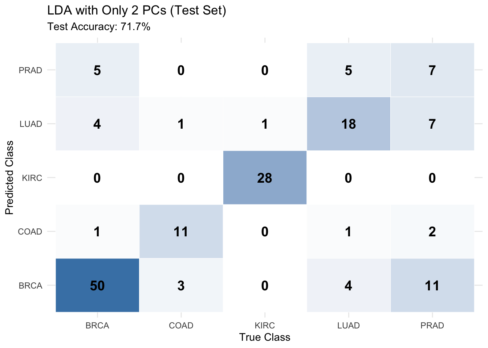
The two-PC matrix provides a deliberately information-limited baseline. Any difference from the selected-PC result illustrates sensitivity to representation dimension; it is not, by itself, a proof of absence of leakage.
We verify that no sample appears in both sets and that no test sample is an exact duplicate of a training sample.
# Check sample ID overlap
train_ids <- train_data$sample_id
test_ids <- test_data$sample_id
id_overlap <- length(intersect(train_ids, test_ids))
# Check for exact duplicate rows across the full analysis feature space.
check_genes <- nonzero_var_genes
train_mat <- train_data |> dplyr::select(all_of(check_genes)) |> as.matrix()
test_mat <- test_data |> dplyr::select(all_of(check_genes)) |> as.matrix()
n_duplicates <- 0
for (i in seq_len(nrow(test_mat))) {
dists <- colSums((t(train_mat) - test_mat[i, ])^2)
if (min(dists) == 0) n_duplicates <- n_duplicates + 1
}
stopifnot(id_overlap == 0, n_duplicates == 0)
tibble(
Check = c(
"Train samples",
"Test samples",
"Sample ID overlap",
"Exact duplicate rows (test in train)"
),
Result = c(
as.character(length(train_ids)),
as.character(length(test_ids)),
as.character(id_overlap),
as.character(n_duplicates)
)
) |>
datatable(
options = list(dom = "t", ordering = FALSE),
rownames = FALSE,
caption = "Train/test set integrity checks"
)Assertions check zero ID overlap and zero exact expression-row overlap between training and test. These checks address specific leakage routes; they cannot establish the absence of every source of bias or leakage.
High scores can be plausible for this benchmark because the five labels arise from distinct tissues, but that explanation is a hypothesis about this dataset rather than a clinical-performance guarantee. The reported checks reduce common leakage risks; independent cohorts and repeated splits would be required to assess robustness.
This study evaluates probabilistic classifiers combined with PCA for five cancer types (BRCA, KIRC, COAD, LUAD and PRAD). The reported values in the generated tables use a train/test split, train-only PCA, and fold-isolated cross-validation for PC selection. They are evidence about this dataset and split, not proof of clinical generalisation.
Separate fitting from evaluation. The split has 642 training and 159 test samples. Each CV fold fits its own scaling and PCA; final fits use only the training partition.
PCA is the dimension-reduction method used here. It makes the selected classical models estimable; regularization and other representations are alternatives. Retained variance does not guarantee retained predictive signal.
Model ranking should follow the rendered training-CV and held-out tables. PCA coordinates are orthogonal, but that property does not guarantee the covariance assumptions of LDA or QDA.
Multinomial Logistic Regression is a discriminative comparison that learns decision boundaries in the selected PCA space; its current performance is displayed in the generated result tables.
Naive Bayes is evaluated across the same PC grid. Its independence assumption is not guaranteed by PCA, so any trend with component count should be read from the current cross-validation curve rather than a fixed narrative value.
Training-only EDA describes the input. Correlations and ANOVA rankings are exploratory; they neither identify mechanisms nor select the classifier features.
The integrity checks are safeguards, not proof of generalisation. The fold isolation, train/test disjointness and sanity checks reduce common leakage risks; an external cohort would still be required before making clinical-performance claims.
Throughout this study, we have relied on PCA for dimensionality reduction. PCA is a linear method: it finds the directions of maximum variance and projects the data onto them. These features and loadings are useful for this analysis, but linear projections can fail to capture complex, nonlinear relationships between samples when visualizing them in just two dimensions.
UMAP constructs a nonlinear low-dimensional representation from a neighborhood graph. Its axes, apparent cluster sizes and global distances depend on the data and hyperparameters; they should not be interpreted as direct biological distances.
UMAP is used only for visualization in this study. It can be used as an input transformation in other properly validated pipelines, but no such classifier is evaluated here.
We fit UMAP on the first 50 PCA scores of the training set (a fixed dimension-reduction choice) and then project the test set onto the same embedding.
library(uwot)
# Fit UMAP on training PCA scores (first 50 PCs)
set.seed(42)
umap_train <- umap(
pca_result$x[, 1:50],
n_neighbors = 15,
min_dist = 0.3,
metric = "euclidean",
ret_model = TRUE, n_threads = 1, n_sgd_threads = 1
)
# Project test set onto the same UMAP embedding
set.seed(42)
umap_test <- umap_transform(pca_test_scores[, 1:50], umap_train, n_threads = 1, n_sgd_threads = 1)
# Combine into tidy data frames
umap_train_df <- tibble(
UMAP1 = umap_train$embedding[, 1],
UMAP2 = umap_train$embedding[, 2],
Class = train_data$Class,
Set = "Train"
)
umap_test_df <- tibble(
UMAP1 = umap_test[, 1],
UMAP2 = umap_test[, 2],
Class = test_data$Class,
Set = "Test"
)
umap_all_df <- bind_rows(umap_train_df, umap_test_df)ggplot(umap_train_df, aes(x = UMAP1, y = UMAP2, color = Class)) +
geom_point(alpha = 0.7, size = 2) +
labs(
title = "UMAP Projection of Training Set by Cancer Type",
subtitle = "Fitted on the first 50 PCA scores of the training data",
x = "UMAP 1", y = "UMAP 2"
) +
theme_minimal()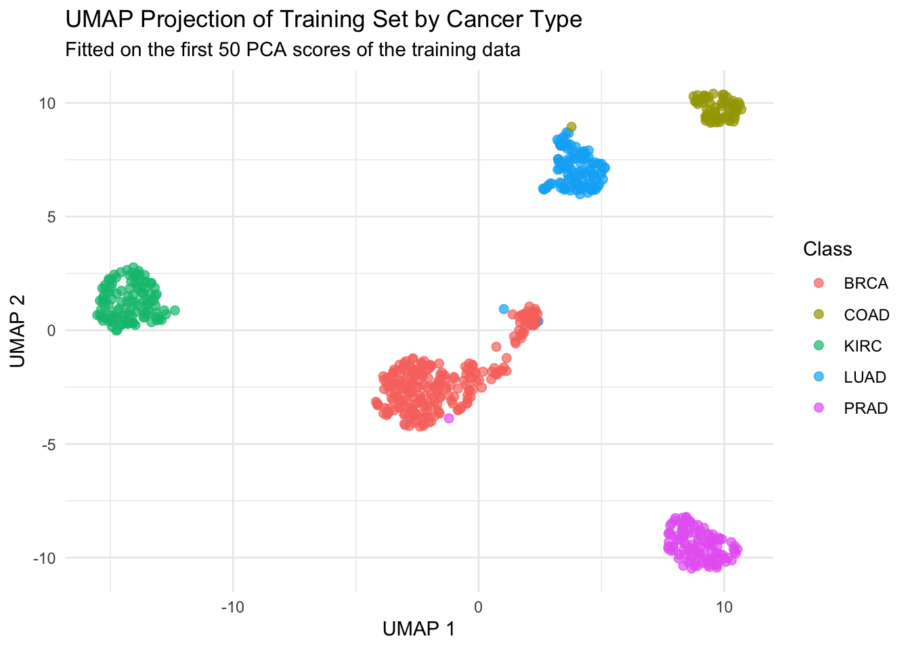
This UMAP plot is an exploratory visualization of the training data. It can suggest local neighbourhood structure, but its axes and global distances should not be used as quantitative evidence of class separation or classifier performance.
ggplot() +
geom_point(
data = umap_train_df,
aes(x = UMAP1, y = UMAP2, color = Class),
alpha = 0.2, size = 1.5
) +
geom_point(
data = umap_test_df,
aes(x = UMAP1, y = UMAP2, color = Class),
alpha = 0.9, size = 2.5, shape = 17
) +
labs(
title = "UMAP: Test Samples Projected onto Training Embedding",
subtitle = paste0("Triangles = test set (", nrow(test_data), " samples), circles = training set (faded)"),
x = "UMAP 1", y = "UMAP 2"
) +
theme_minimal()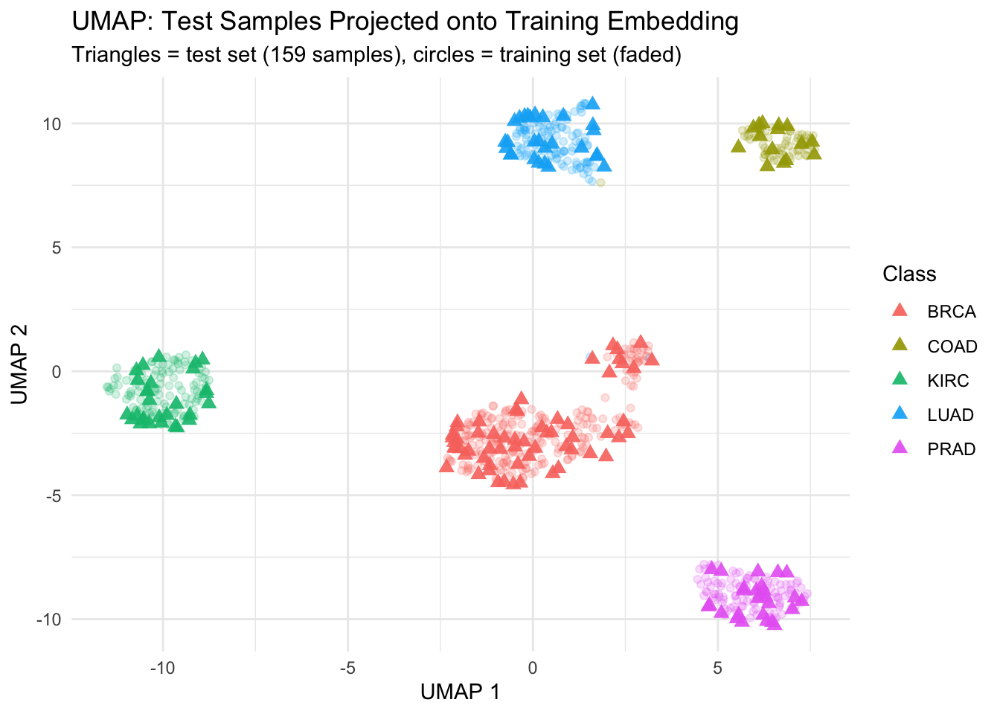
The overlay shows how this split projects into the UMAP fitted on the training partition. It is a visual diagnostic only: proximity in a UMAP embedding is not an independent validation of the classifiers or a measure of generalisation.
umap_train_df |>
mutate(highlight = Class) |>
ggplot() +
geom_point(
data = umap_train_df |> dplyr::select(-Class) |> rename(UMAP1_ = UMAP1, UMAP2_ = UMAP2),
aes(x = UMAP1_, y = UMAP2_),
color = "grey85", size = 1, alpha = 0.5
) +
geom_point(
aes(x = UMAP1, y = UMAP2, color = Class),
size = 1.5, alpha = 0.8
) +
facet_wrap(~Class, ncol = 3) +
labs(
title = "UMAP: Each Cancer Type Highlighted Against All Others",
subtitle = "Grey points show all other classes for spatial context",
x = "UMAP 1", y = "UMAP 2"
) +
theme_minimal() +
theme(legend.position = "none")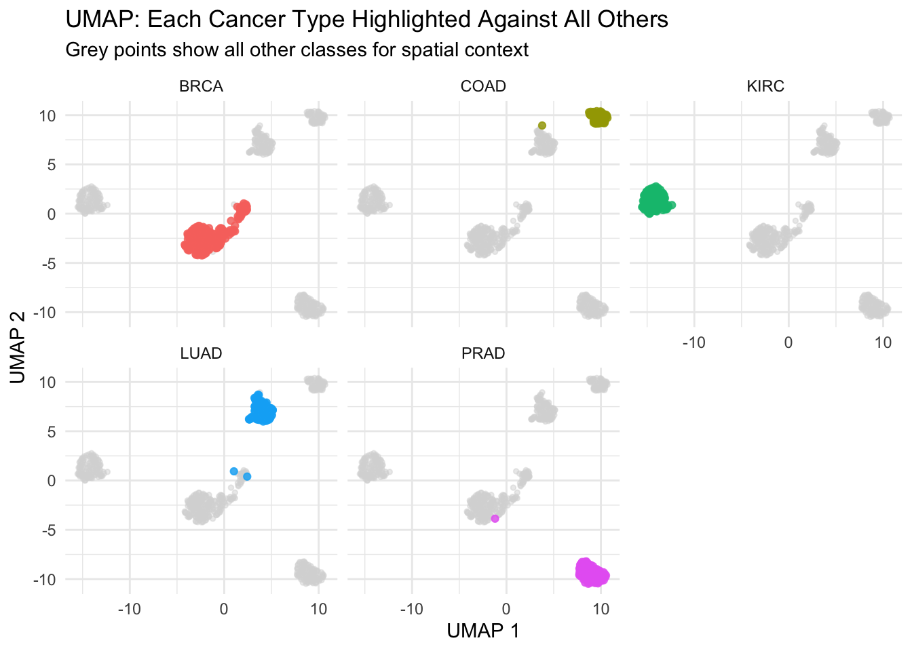
The faceted view highlights each class against the full training embedding. Compare the displayed locations within this run; coordinate orientation, apparent spread and inter-class gaps are properties of this fitted visualization, not validated biological distances or estimates of molecular heterogeneity.
ggplot(umap_train_df, aes(x = UMAP1, y = UMAP2, color = Class)) +
geom_point(alpha = 0.4, size = 1.5) +
geom_density_2d(linewidth = 0.6, alpha = 0.8) +
labs(
title = "UMAP with Density Contours per Cancer Type",
subtitle = "Contour lines show the concentration regions of each class",
x = "UMAP 1", y = "UMAP 2"
) +
theme_minimal()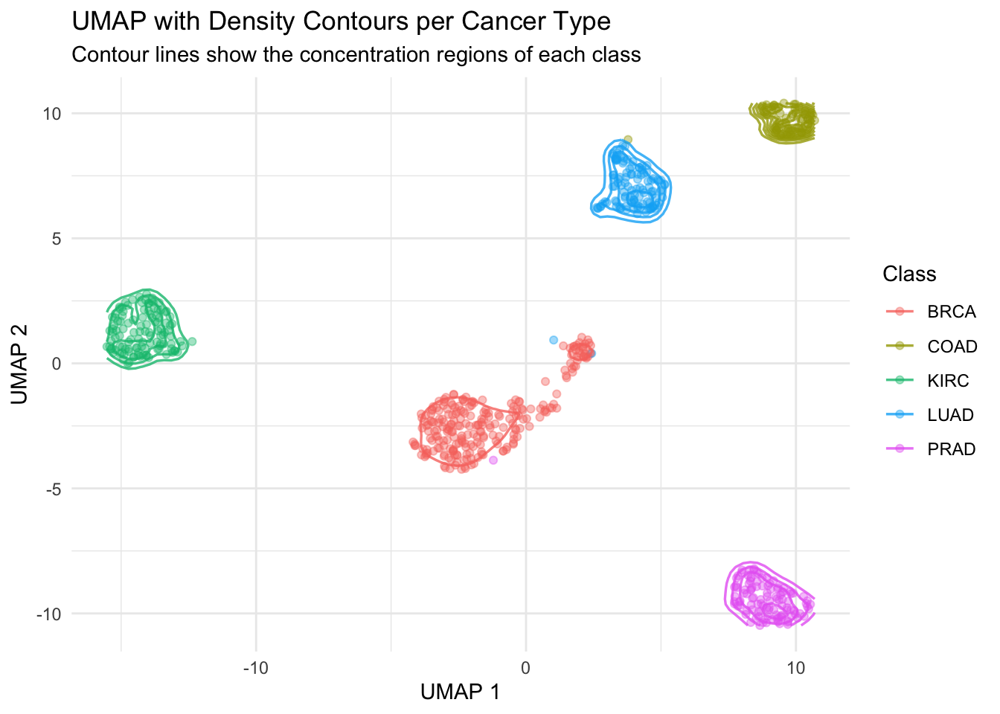
The contours summarize density in the two-dimensional visualization. They are descriptive; UMAP can distort global geometry, so this figure should not be treated as a statistical test of class separability.
library(patchwork)
Attaching package: 'patchwork'The following object is masked from 'package:MASS':
areap_pca <- pca_scores |>
ggplot(aes(x = PC1, y = PC2, color = Class)) +
geom_point(alpha = 0.7, size = 1.5) +
labs(title = "PCA (PC1 vs PC2)", x = "PC1", y = "PC2") +
theme_minimal() +
theme(legend.position = "none")
p_umap <- umap_train_df |>
ggplot(aes(x = UMAP1, y = UMAP2, color = Class)) +
geom_point(alpha = 0.7, size = 1.5) +
labs(title = "UMAP", x = "UMAP 1", y = "UMAP 2") +
theme_minimal()
p_pca + p_umap +
plot_annotation(
title = "Linear (PCA) vs Nonlinear (UMAP) Dimensionality Reduction",
subtitle = "Both fitted on training data only"
)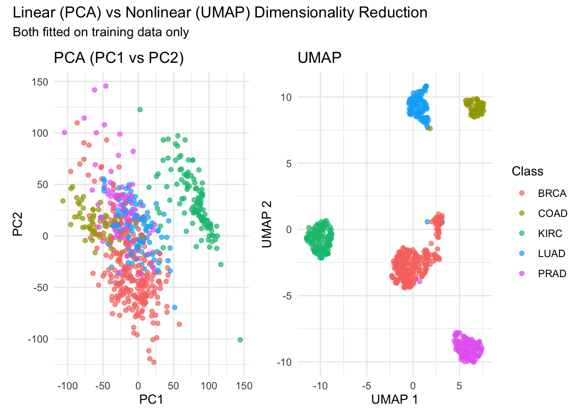
The side-by-side comparison highlights the complementary strengths of each method:
These visualizations complement the quantitative results. They do not independently establish generalization, tissue mechanisms, or an absence of leakage.